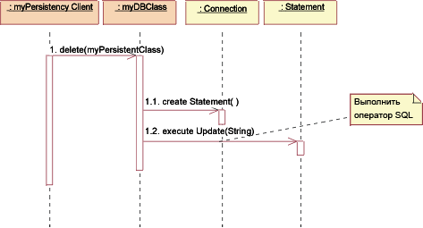

| Концепция: Механизм проектирования и реализации. |
 |
|
| Связанные элементы |
|---|
Введение в механизмы проектирования и реализации.Механизм проектирования - это уточнение соответствующего механизма анализа (См. также концепция: механизм анализа). Механизм проектирования добавляет конкретные детали к механизму концептуального анализа, но ему не хватает определенной технологии, например, реализации определенного поставщика или, скажем, объектно ориентированной СУБД. Как и механизм анализа, механизм проектирования может создавать шаблоны, в данном случае архитектурные шаблоны или шаблоны проектов. Подобным образом механизм реализации - это уточнение соответствующего механизма проектирования, например, с помощью определенного языка программирования или другой технологии реализации как, например, промежуточное программное обеспечение определенного поставщика. Механизм реализации может создавать языки или шаблоны реализации. Пример: Параметры механизмов проектированияРассмотрим механизм анализа для поддержки постоянных объектов:
Эти объекты требуют различных средств для хранения. Можно указать следующие параметры механизмов проектирования для поддержки хранения:
Обратите внимание, что эти скорости называются низкими только в сравнении со скоростью доступа к внутренней памяти. Также очевидно, что в некоторых средах время доступа можно уменьшить с помощью кэширования. Уточнение записи преобразования между механизмами проектирования и реализацииПервоначально запись преобразования между механизмами проектирования и реализации скорее всего будет не оптимальна, но позволит выполнять проект и укажет неизвестные до этого риски, а также стимулирует дальнейшие поиски и исследования. В дальнейшем с увеличением объема знаний в проекте необходимо уточнить запись преобразования. Итеративно уточняйте запись преобразования между механизмами проектирования и реализации, убирая избыточные пути и работая как "сверху-вниз", так и "снизу-вверх". Работа сверху-вниз При работе сверху-вниз новые и уточненные реализации вариантов выбора определяют новые требования для необходимых механизмов проектирования с помощью необходимых механизмов анализа. Эти новые требования могут помочь обнаружить дополнительные параметры механизма проектирования и вызвать разделение между механизмами. Также, есть следующие связи между сложностью системы и ее быстродействием:
Работа снизу-вверх При работе снизу-вверх и поиске доступных механизмов реализации вероятно обнаружить продукты, удовлетворяющие одновременно сразу несколько механизмов проектирования, но они требуют адаптацию или перераспределение механизмов проектирования. Уменьшение количества используемых механизмов реализации может снизить производительность. Например, использовав СУБД для хранения объектов класса А, вы можете решить хранить таким же образом все объекты в системе. Это может оказаться очень неэффективно. Совсем не обязательно, что все объекты должны храниться в СУБД. Некоторые объекты могут постоянно храниться, но редко использоваться большинством приложений. Наилучшей стратегией может быть чтение объекта из СУБД в память и его периодическая синхронизация. Пример Информация о полете может храниться в памяти для быстрого доступа и в СУБД для длительного хранения. Это, однако, вызывает необходимость наличия механизма для синхронизации. Часто имеется более одного механизма проектирования, связанного с клиентским классом для удовлетворения разным параметрам. По причине того, что механизмы реализации часто поставляются комплектами в коробочных продуктах (операционные системы и промежуточное программное обеспечение), необходимо проводить оптимизацию, основанную на стоимости, разнице в сопротивлении или единообразия стиля. Также, механизмы часто взаимозависимы, что делает трудным четкое разделение служб в механизмах проектирования. Примеры
Процесс уточнения продолжается в течение всего этапа совершенствования и всегда необходимо искать решение, балансирующее следующие условия:
Общая задача - иметь простой и понятный набор механизмов, который бы обеспечивал концептуальную целостность, простоту и четкость большой системе. Пример: Запись преобразования между механизмами проектирования и механизмами реализацииПостоянные механизмы проектирования могут быть преобразованы в механизмы реализации следующим образом:
Возможная запись преобразования между механизмами анализа и механизмами проектирования. Пунктирные указатели обозначают "уточнение", подразумевая, что параметры механизма проектирования наследуются от механизм анализа, но будут перечислены и уточнены. После завершения оптимизации механизмов существует следующие записи преобразования:
Отображение должно обладать проходимостью в обоих направлениях, чтобы можно было легко определять классы клиентов при изменении механизмов реализации. Описание механизмов проектированияМеханизмы проектирования и подробная информация о их использовании содержится в документацииРабочий продукт: Рекомендации, связанные с проектами. Информация об отношениях (или записях преобразования) механизмов анализа к механизмам проектирования и механизмам реализации и связанные обоснования для этих выборов находится в документации Рабочий продукт: Документация по архитектуре программного обеспечения. Так же, как и механизм анализа, механизм проектирования можно моделировать с помощью кооперирования, которое может производить архитектурные шаблоны илишаблоны проектов. Пример: Механизм храненияЭтот пример использует экземпляр шаблона для хранения с помощью реляционной СУБД и взят из JDBC™ (Java Data Base Connectivity). Хотя здесь приводится проект, JDBC предоставляет исходный код для некоторых классов, таким образом то, что приведено здесь находится близко от механизма реализации. Изображение Статического вида: JDBC показывает классы в кооперировании (строго, в соответствии с классификатором).
Статический вид: JDBC Классы, помеченные желтым цветом, были предоставлены, остальные (myDBClass и т.д.) - были связаны проектировщиком для создания механизма. В JDBC клиент работает с классом DBClass при чтении или записи постоянных данных. Класс DBClass отвечает за доступ к базе данных JDBC с помощью класса DriverManager. При открытии базы данных Соединение класс DBClass может создавать операторы SQL, посылаемые в основную реляционную СУБД и выполняемые с помощью класса Операторы. Класс Операторы "разговаривает" с базой данных. Результат запроса SQL выдается в объект НаборРезультатов. Класс DBClass отвечает за постоянное хранение экземпляра другого класса. Он распознает отношение OO-реляционная СУБД и обладает поведением для взаимодействия с реляционной СУБД. Класс DBClass преобразовывает объект, записывает его в реляционную СУБД, считывает данные объекта из реляционной СУБД и компонует объект. Каждый постоянно хранящийся класс будет иметь соответствующий класс DBClass. СписокПостоянныхКлассов используется для выдачи набора постоянных объектов при запросе базы данных (например, DBClass.read()). Ниже показаны несколько динамических представлений для демонстрации работы механизма.
JDBC: инициализация Перед тем, как какой-либо постоянный класс может быть доступен, должна произойти его инициализация. Для инициализации соединения с базой данных класс DBClass должен загрузить соответствующий драйвер, вызвав операцию администратора драйверов getConnection(), указав URL, пользователя и пароль. Операция getConnection() пробует установить соединение с указанным URL базы данных. Администратор драйверов пытается выбрать соответствующий драйвер из набора зарегистрированных драйверов JDBC. Параметры: url: url формы базы данных jdbc:subprotocol:subname. Этот URL используется для обнаружения текущего сервера базы данных и в этом случае не относится к Web. пользователь: пользователь базы данных, от чьего имени производится соединение пароль: пароль пользователя Возвращаемое значение: соединение с URL.
JDBC: Создать Для создания класса агент хранения запрашивает класс DBClass. Класс DBClass создает экземпляр постоянного класса со значениями по умолчанию. Класс DBClass затем создает оператор с помощью операции createStatement() класса соединения. Оператор выполняется и данные включаются в базу данных.
JDBC: Чтение Для чтения постоянного класса клиент хранения запрашивает у класса DBClass операцию чтения. Класс DBClass создает оператор с помощью операции createStatement() класса соединения. Оператор выполняется, и данные записываются в объект НаборРезультатов. Класс DBClass создает экземпляр постоянного класса и заполняет его полученными данными. Данные записываются в объект коллекции - экземпляр класса СписокПостоянногоКласса. Примечание: строка, передаваемая в executeQuery() не обязательно та же самая, что и передаваемая в read(). Класс DBClass компонует запрос SQL для получения данных, хранимых базой данных с помощью параметра оператора read(). Это делается для того чтобы клиенту класса DBClass не потребовалось информация о внутренних характеристиках базы данных для создания правильного запроса. Эта информация скрыта внутри класса DBClass.
JDBC: Обновление Для обновления постоянного класса клиент хранения запрашивает у класса DBClass операцию обновления. Класс DBClass получает данные из объекта постоянного класса и создает оператор с помощью операции createStatement() класса соединения. После компоновки оператора выполняется обновление и база данных обновляется информацией из класса. Помните: задачу упорядочивания постоянного класса и его записи в базу данных выполняет класс DBClass. Поэтому, необходимо сначала получить его из постоянного класса и затем создавать оператор SQL. Примечание: В описанном выше механизме постоянный класс должен обеспечить классу DBClass процедуру доступа ко всем хранящимся данным. Таким образом обеспечивается внешний доступ к определенным хранящимся атрибутам, которые в другом случае были бы недоступны. Это цена, которую необходимо платить для того чтобы извлечь хранящиеся данные из закрытого класса.  JDBC: Удаление Для удаления постоянного класса клиент хранения запрашивает у класса DBClass операцию удаления. Класс DBClass создает оператор с помощью операции createStatement() класса соединения. Оператор выполняется и данные удаляются из базы данных. При реализации этого проекта могут быть приняты решения о записи преобразований класса DBClass в постоянные классы, например, создание одного класса DBClass на один постоянный класс и размещение их в определенных пакетах. Эти пакеты будут иметь зависимости от предоставленных пакетов java.sql (Дополнительная информация содержится в Документации JDBC™ API), которые содержат поддерживающие классы - администратор драйверов, соединение, оператор и набор результатов. |


© Copyright IBM Corp. 1987, 2006. Все права защищены.. |